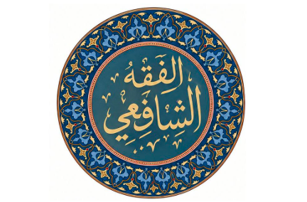
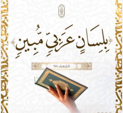
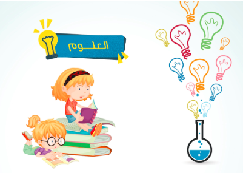
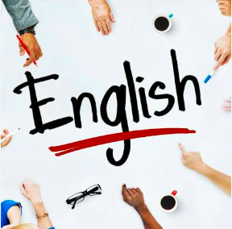

اصول الدين
تساعد دراسة أصول الدين على فهم العقيدة الإسلامية، ومعرفة أركان الإيمان، وترسيخ الإيمان بالله تعالى، وتنمية الوعي الديني لدى الطالب

يساعد الفقه الشافعي الطالب على فهم الأحكام الشرعية المتعلقة بالعبادات والمعاملات، ومعرفة كيفية أداء العبادات بصورة صحيحة، والالتزام بما جاء في الشريعة الإسلامية
تساعد دراسة أصول الدين على فهم العقيدة الإسلامية، ومعرفة أركان الإيمان، وترسيخ الإيمان بالله تعالى، وتنمية الوعي الديني لدى الطالب

يساعد تعلم القرآن الكريم وتجويده على قراءة كلام الله تعالى قراءة صحيحة، وإتقان مخارج الحروف وأحكام التلاوة، وفهم الآيات والعمل بما فيها من هداية وقيم إسلامية

تشمل المواد العربية اللغة العربية والنحو والصرف والبلاغة، وتهدف إلى تنمية مهارات الطالب في القراءة والكتابة والتعبير، وفهم قواعد اللغة العربية، ومعرفة أساليبها المختلفة، وإتقان استخدام الكلمات والجمل بطريقة صحيحة، بالإضافة إلى التعرف على جمال اللغة العربية وأساليبها البلاغية والأدبية
تساعد دراسة الرياضيات على تنمية التفكير المنطقي والقدرة على حل المشكلات، وتدريب الطالب على الدقة والتركيز، كما تعد من العلوم الأساسية التي يحتاج إليها الطالب في دراسته وحياته اليومية

تساعد دراسة العلوم على فهم الظواهر الطبيعية والتعرف على الكائنات الحية والبيئة من حولنا، كما تنمي مهارات الملاحظة والتفكير والتحليل والاستنتاج، وتساعد الطالب على فهم جسم الإنسان والمادة والطاقة والاستفادة من المعرفة العلمية في حياته اليومية

تساعد الدراسات الاجتماعية على التعرف على تاريخ الوطن وحضارته، وفهم الجغرافيا والبيئة والمجتمع، وتنمية وعي الطالب بتاريخ بلده وموقعه ودوره في المجتمع

تساعد دراسة اللغة الإنجليزية على تنمية مهارات القراءة والكتابة والاستماع والتحدث، وتمكن الطالب من التواصل وفهم العديد من المصادر والمعلومات باللغة الإنجليزية

تساعد دراسة الحاسب الآلي على التعرف على أساسيات استخدام أجهزة الحاسب والتكنولوجيا، وتنمية مهارات الطالب في التعامل مع البرامج والتطبيقات المختلفة، كما تساعده على فهم أساسيات البرمجة والتفكير المنطقي وحل المشكلات، واكتساب مهارات تكنولوجية يحتاج إليها في الدراسة والحياة اليومية